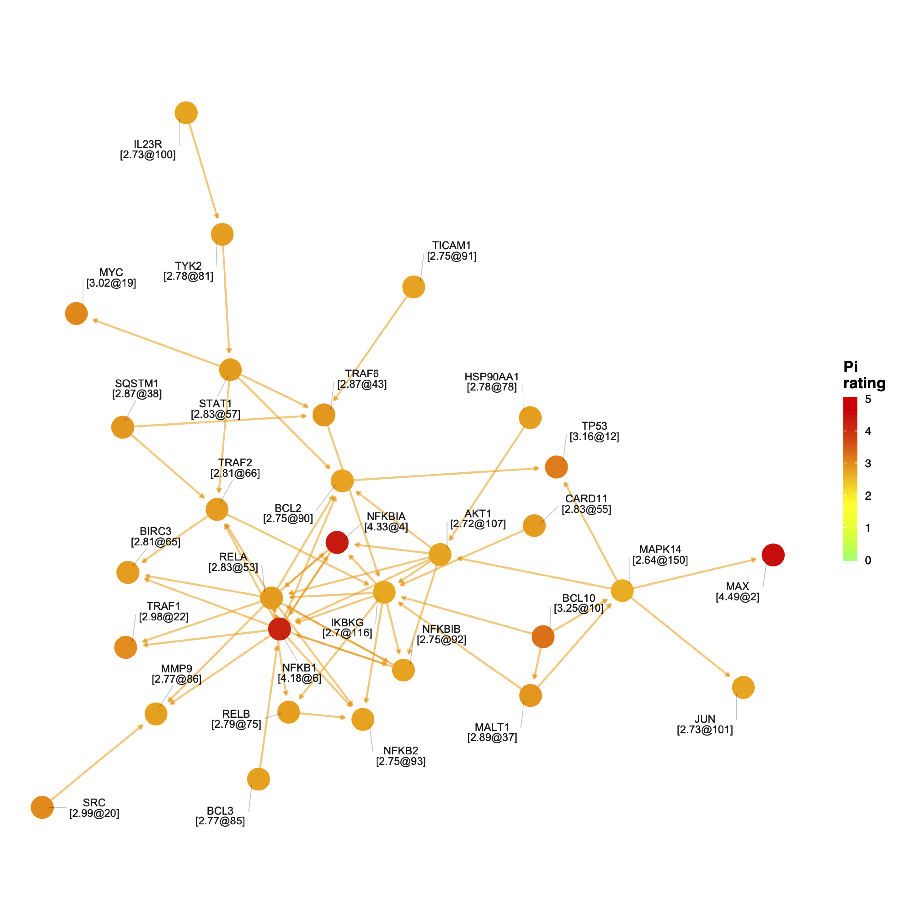

4.2 Crosstalk genes
A network of highly ranked and interconnecting genes was identified containing 30 genes and 62 interactions. Genes colored by 5-star rating (also labelled in the form of [rating@rank]), and interactions derived from KEGG pathway map.

Network genes shown above can be searched and downloaded below.